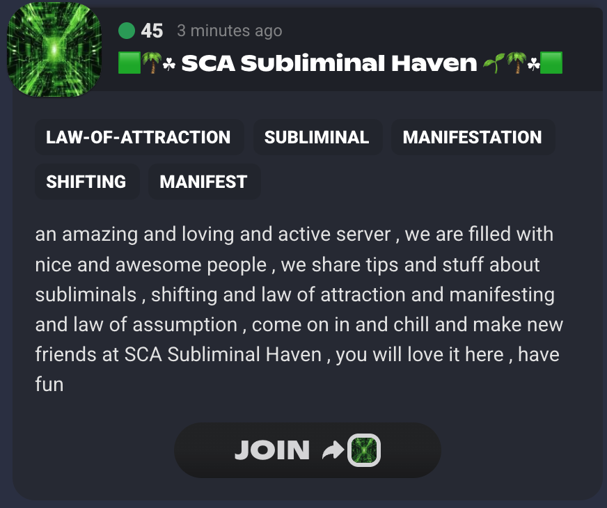
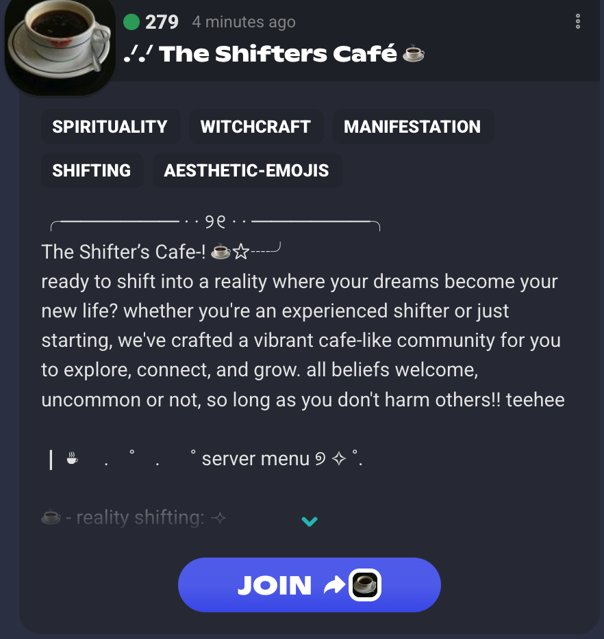
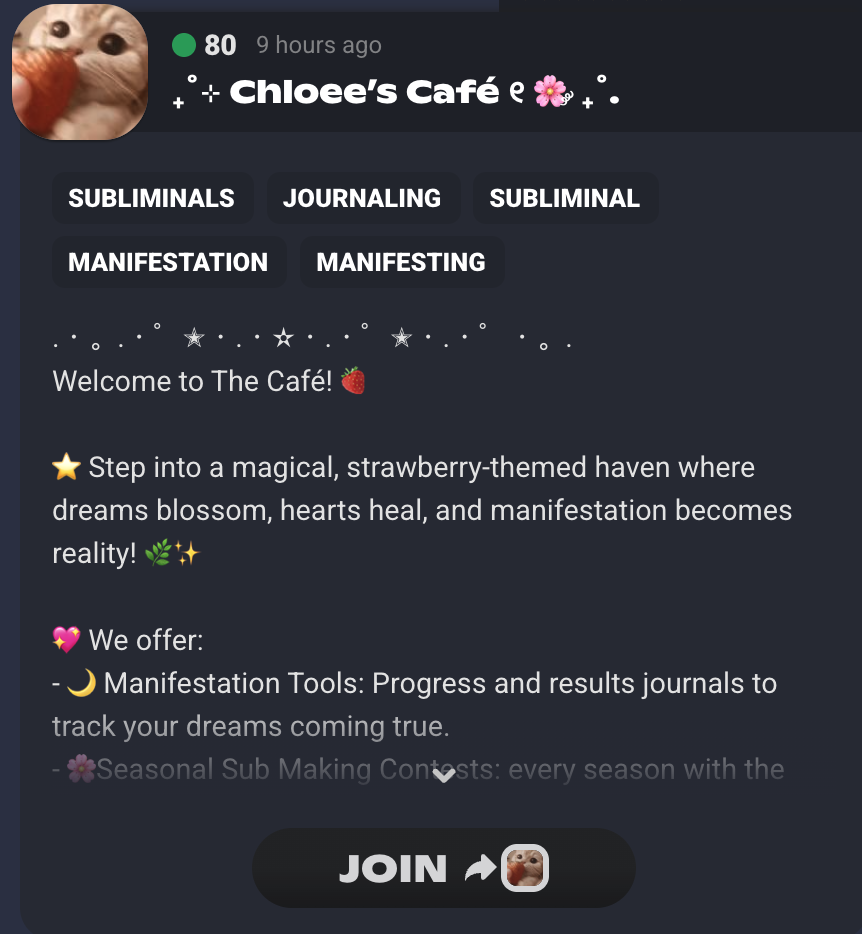

WEEK 11 · 9–13 MAR 2026 · CHO AUDIT 9/10 第 11 周 · 3 月 9–13 日 · CHO 审核 9/10
Community isn't a feature — it's the foundation. Understanding communities is my main role: where they form, why they stick, how to build there. 社群不是功能，而是根基。理解社群是我的核心职责：它们在哪形成、为何留存、如何在那里建设。
Dionne · Social Media & Creator Partnerships Dionne · 社媒与创作者合作
This week本周
A deeper truth: people yearn for community. Not tools — belonging. SoulGarden is the proof. We want to connect with high-intent people inside these spaces. Many of them love to engage and are looking for real humans to connect with. That's where my role sits: to listen to their needs and wants, and to build genuine relationships. That takes time. 一个更深的真相：人们渴望社群。不是工具，而是归属。SoulGarden 就是证明。我们想与这些空间里的高意图用户连接。他们中许多人乐于参与，也在寻找真实的人与之连接。我的角色正在这里：倾听他们的需求与愿望，建立真实的关系。这需要时间。
Bottom line for the business: community = pipeline quality + retention + organic growth. All three feed Gate 1 and 200.对业务而言：社群 = 管线质量 + 留存 + 有机增长。三者都支撑 Gate 1 与 200。
Pipeline quality管线质量
Right communities → right users. We show up where high-intent manifestation users already are.对的社群 → 对的用户。我们在高意图用户已在的地方出现。
Value: faster path to 200 installs.价值：更快达成 200 安装。
Belonging, not just installs归属，不止安装
People yearn for community. SoulGarden embodies it: daily rituals, shared habits, users who invite others.人们渴望社群。SoulGarden 将其具象化：每日仪式、共同习惯、用户邀请用户。
Value: retention through belonging.价值：因归属而留存。
Organic growth有机增长
Community members → users → advocates. Growth that compounds without paid ads.社群成员 → 用户 → 推广大使。不靠付费的复合增长。
Value: scalable acquisition.价值：可规模化的获客。
This week's deliverables本周交付
10+ communities mapped, 100 KOLs + 2 onboarded, nurture plan + 5 user feedback, 13 posts live, 1 dashboard. All tie to Gate 1.10+ 社群落图、100 KOL + 2 位入驻、培育计划 + 5 份用户反馈、13 帖上线、1 个仪表板。全部指向 Gate 1。
Value: clear outcomes that drive 200.价值：清晰结果，驱动 200。
Understanding communities is at the heart of my role. This week: map where SoulGarden's people already gather — and build there. Technology should connect, not isolate. 理解社群是我工作的核心。本周：画出 SoulGarden 用户已在的阵地，并在那里建设。科技应连接人，而非隔离。
Why this comes first: without the right communities and KOLs, we're marketing into the void. Finding them is the foundation for 200.为何优先：没有对的社群与 KOL，我们就是在对虚空营销。找到他们是 200 的根基。

SCA Subliminal HavenSCA Subliminal Haven · 37 members · Join

The Shifters CaféThe Shifters Café · 206 members · Join

Chloee's CaféChloee's Café · 31 members · Join
High-intent Discord channels in the manifestation realm. First: SCA Subliminal Haven (linked).显化领域高意图 Discord 频道。第一：SCA Subliminal Haven（已链接）。
Example · Connecting with a high-intent creator示例 · 与高意图创作者连接
Cheru CrystalsCheru Crystals · @cherucrystals
We're connecting with Cheru to explore opportunities and bridge our products with hers. Her space — crystals, spirituality, wellness — sits right in the manifestation realm SoulGarden serves. Same audience, shared values: people looking for meaning, ritual, and belonging. Story-tell with the screenshots below: her profile and content show why she's a fit and how we're building the relationship. 我们正在与 Cheru 连接，探索机会并将我们的产品与她的结合。她的领域 — 水晶、灵性、疗愈 — 正在 SoulGarden 服务的显化领域内。同一受众、共同价值：寻找意义、仪式与归属的人。用下方截图讲故事：她的主页与内容展示为何她是合适人选，以及我们如何建立关系。
Profile screenshot · links to her Instagram.主页截图 · 点击跳转其 Instagram。
High-intent communities高意图社群
✓ Deliverable: 1 WhatsApp channel交付物：1 个 WhatsApp 频道
KOL pipeline + onboardingKOL 管线 + 入驻
✓ Deliverable: KOL list + onboarding evidence for 2交付物：KOL 名单 + 2 位入驻证明
Communities stick when people feel they belong. Nurturing is part of understanding community — the 29 we have get first touchpoints; 5+ feedback responses and a retention baseline prove we're building real community, not just installs. 当人们感到归属时，社群才会留存。培育是理解社群的一部分 — 现有 29 位用户获得首次触达；5+ 份反馈与留存基线证明我们在建真正的社群，而不只是安装量。
Why it matters: these 29 users are our first community cohort. How we treat them sets retention and word-of-mouth for 200.为何重要：这 29 位用户是我们的首批社群 cohort。我们如何对待他们，决定了留存与口碑，进而影响 200。
Nurture plan + touchpoints培育计划 + 触达
✓ Deliverable: nurture plan + execution evidence + user feedback summary交付物：培育计划 + 执行证明 + 用户反馈摘要
Content and data serve community strategy: they show which channels and behaviours actually build toward 200. My community lens — where we show up, what we measure — ties it all together. 内容与数据服务于社群策略：它们显示哪些渠道和行为在真正推动 200。我的社群视角 — 我们在哪出现、我们衡量什么 — 把这一切串起来。
Why it matters: content and dashboard show where we're winning and what to double down on — so we invest in what drives 200.为何重要：内容与仪表板显示我们在哪赢、该加码什么，从而把资源投在能驱动 200 的地方。
Schedule content + report排期内容 + 报告
✓ Deliverable: 13 posts live + performance report交付物：13 帖上线 + 表现报告
Dashboard + tracking仪表板 + 追踪
✓ Deliverable: live dashboard link + tracking framework doc交付物：仪表板链接 + 追踪框架文档
Community社群
Nurture培育
Content & data内容与数据
Dionne · Social Media & Creator Partnerships · ChronoAI · Week 11 Dionne · 社媒与创作者合作 · ChronoAI · 第 11 周